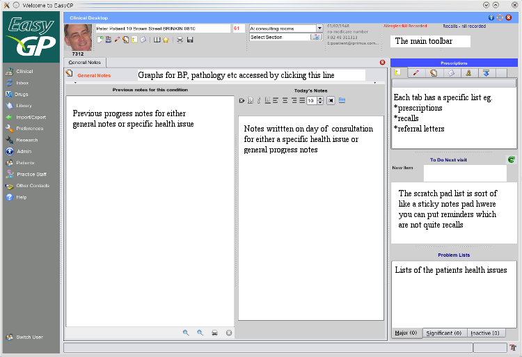

Main Clinical Screen

The clinical section is accessed by clicking on the 'Clinical button' at the top of the side bar.
The Toolbar bar will be used to find the patient, display basic patient information and to access all the different
clinical sections in EasyGP.
All progress notes sections look similar to that shown above, here a progress notes editor for general notes.
Progress notes are added for specific health issues by double clicking on the problem lists at the bottom right hand
side of the screen.